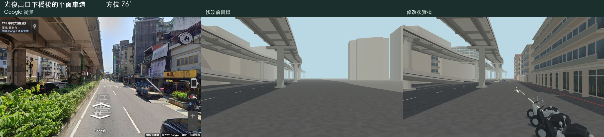
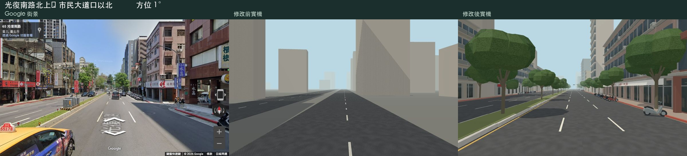
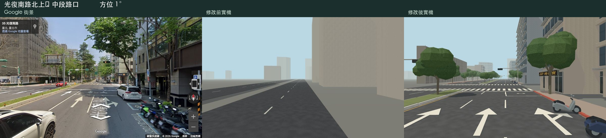
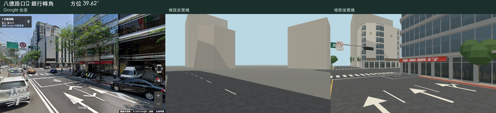
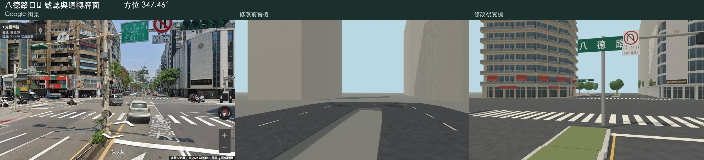
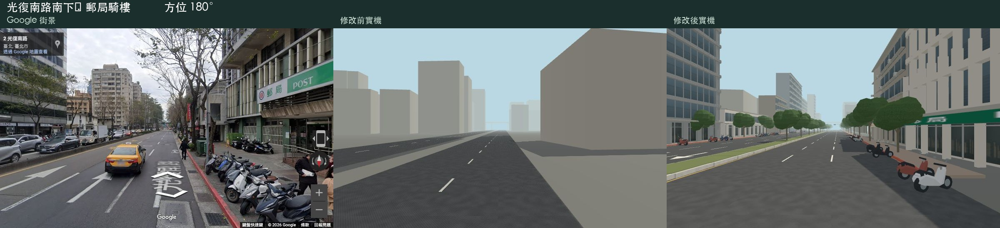
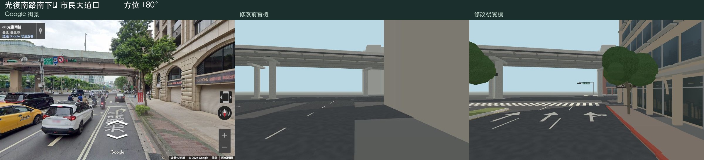
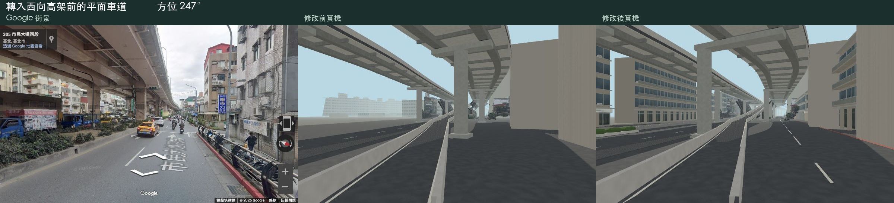

從光復南路出口下橋，經八德路口返回西向入口。前後兩版實機使用相同的座標、方位和鏡頭；鏡頭離地高度估為 2.45 公尺。
方位 76° 開啟 Google 街景 看原尺寸

方位 1° 開啟 Google 街景 看原尺寸


方位 39.62° 開啟 Google 街景 看原尺寸

方位 347.46° 開啟 Google 街景 看原尺寸

方位 180° 開啟 Google 街景 看原尺寸


方位 247° 開啟 Google 街景 看原尺寸
